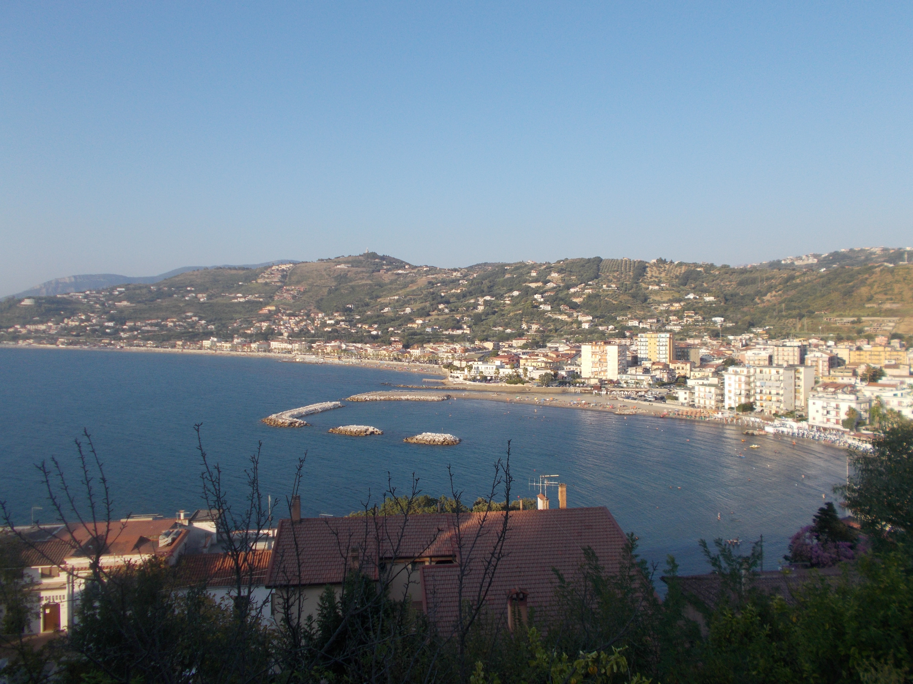
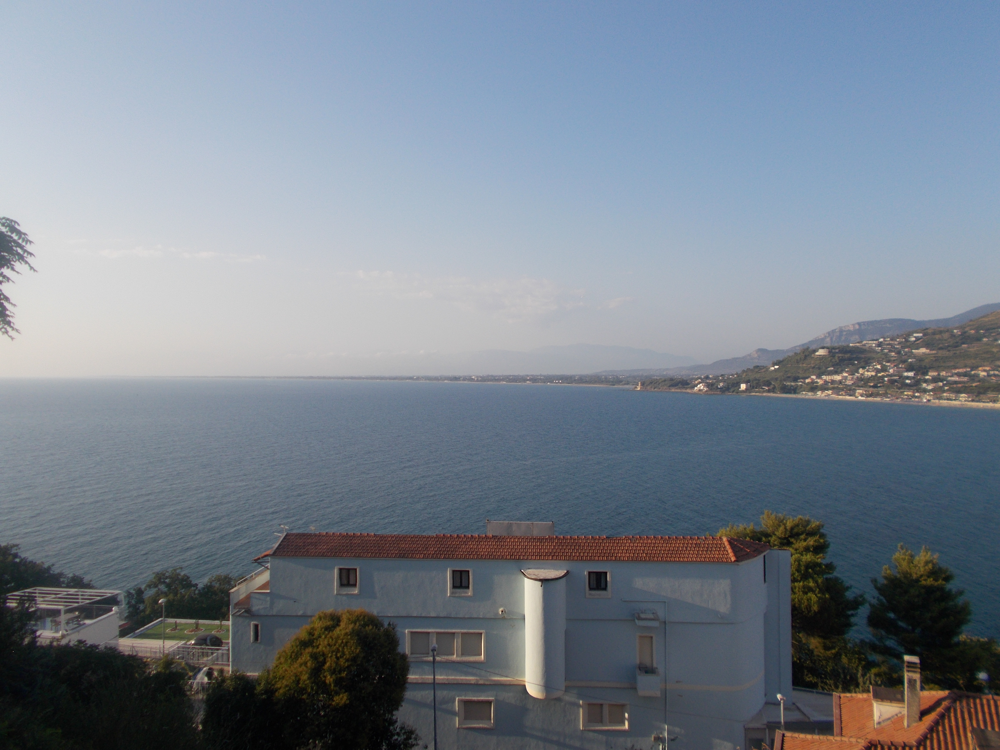
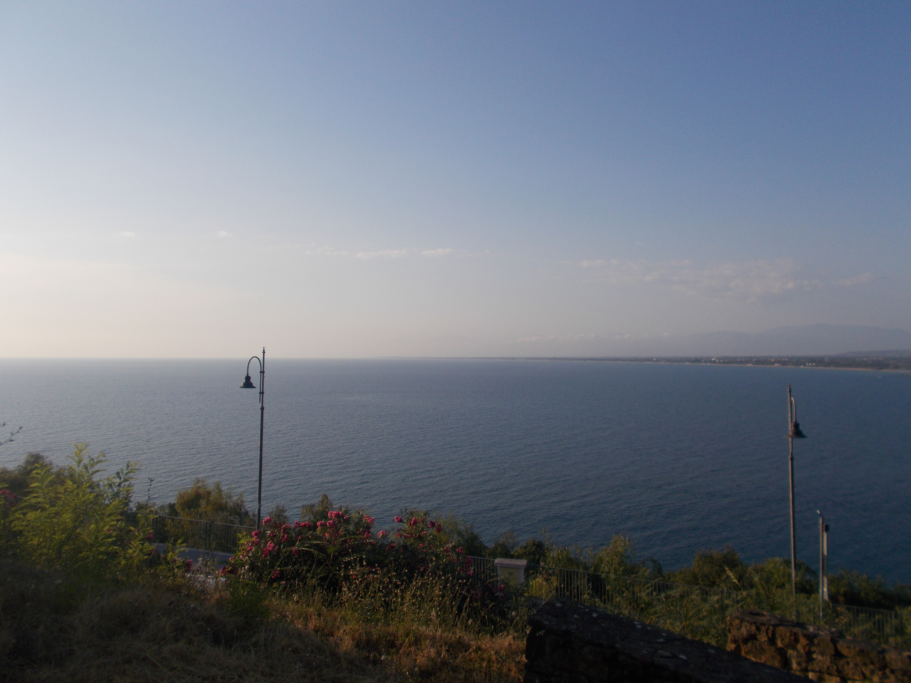
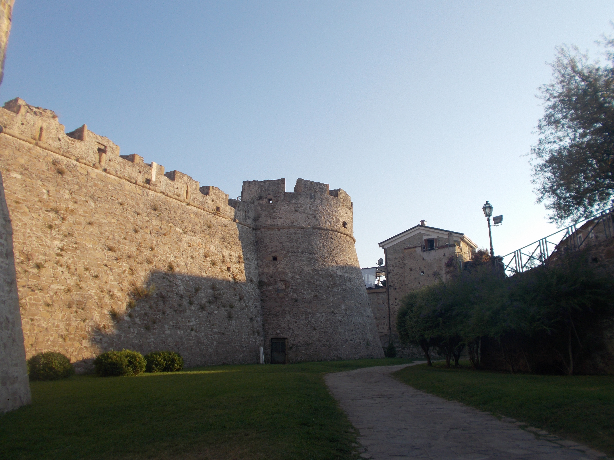
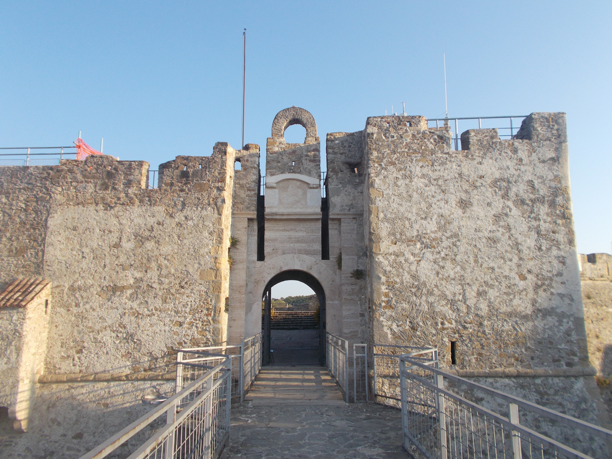
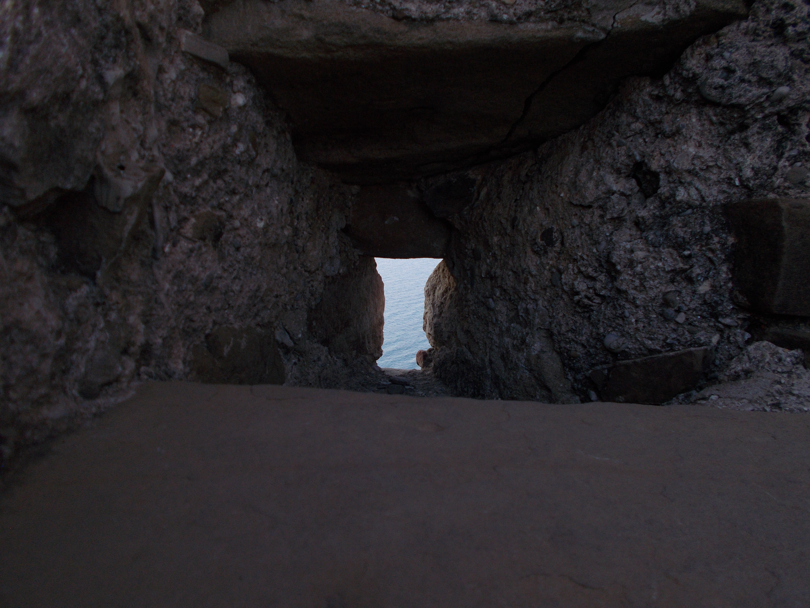

Panorama Costiero
La baia vista dall'alto

Prospettive sul Mare
Architettura e orizzonte

Luci della Costa
Passeggiata con vista sul mare

Mura Fortificate
Scorci storici e bastioni

Orizzonte Infinito
Naturalezza e immensità del mare

Ingresso Storico
Il ponte e il portale in pietra

Prospettiva d'Ingresso
Dettaglio del passaggio fortress

Sulle Mura
Camminamento di ronda

Finestre del Tempo
Dettagli architettonici antichi

Sguardo sul Mare
Scorcio nascosto nella roccia